CS184/284A Fall 2026 Homework 4 Write-Up
Link to webpage: https://cal-cs184-student.github.io/hw4-bha-writeup/
Link to GitHub repository: https://github.com/cal-cs184-student/hw4-bha
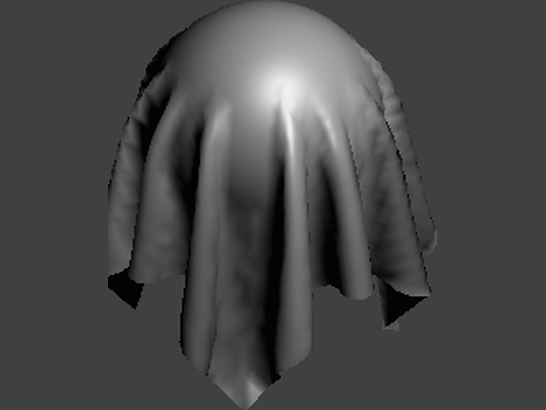
1: Overview
What I built
- I built a real-time cloth simulator that creates a mass-spring grid, integrates it with Verlet, and adds Provot constraints, sphere/plane collisions, and spatial-hashing self-collisions.
- The simulation runs in
src/cloth.cpp,src/collision/sphere.cpp,src/collision/plane.cpp, and the GUI insrc/clothSimulator.cpp. Shading is inshaders/*.fragandshaders/Displacement.vert. - Parts 1–4 give the physics; Part 5 adds Diffuse, Blinn-Phong, Texture, Bump, Displacement and Mirror shaders.
My approach per part
- Part 1:
Cloth::buildGridcreates a row-major mass grid, pins requested corners, and adds structural, shearing and bending springs with correct rest lengths. - Part 2: Force accumulation for gravity and Hooke springs, Verlet integration with damping, and Provot distance constraint at 1.1× rest length.
- Part 3: Sphere collision via tangent projection and friction-scaled correction; plane collision via signed distances and
SURFACE_OFFSET. - Part 4: Spatial hash via
hash_positionandbuild_spatial_map, pairwise self-collision correction scaled by1/simulation_steps. - Part 5: Lambertian diffuse, Blinn-Phong with tuned
ka, ks, ia, p, texture mapping, normal perturbation for bump, vertex displacement, and cubemap reflection for mirror.
Problems and fixes
- Textbox focus off-by-one. Clicking at the reported Normal/Height coordinates missed the box because nanogui applies
p -= Vector2i(1,2)after pixel ratio. Moving the click to 150,266 / 150,294 and avoiding the left 14px spinner area fixed focus. - Key events dropped under tight timing. Synthetic key events with ~80ms spacing were coalesced by GLFW. Increasing press hold to 70ms and inter-key delay to 220ms made the text entry reliable.
- Specular invisible on pinned cloth. The light at
(0.5,2,2)and camera on the +z side gavedot(n,h)≈ 0.3 with a 1×1 cloth whose normals point +y. Switching the demo tosphere.jsonand loweringpto 8 withks=2.0made the dome highlight visible. - Screenshot capture timing. Running the capture tool between two text-entry calls caused a mid-sequence failure. Capturing only at the end of the sequence removed the race.
What I learned
- Verlet + Provot is surprisingly stable if damping and
ksare balanced; too lowksmakes the cloth floppy, too high makes it jitter. - Spatial hashing turns
O(n²)self-collision into near-linear cost; the hash box size3*width/num_width_pointsis critical for correctness. - Shading correctness depends on geometry as much as the shader. Bump mapping only shows with a height texture, and specular only shows when normals face the view-light half-vector.
2: Masses and Springs
I implemented Cloth::buildGrid to create a regular grid of point masses and connect them with structural, shearing and bending springs. The grid is row-major with the x index varying fastest. Pinning is tested against the pinned set and stored as pinned = true. Structural springs connect each mass to its left and upper neighbor, shearing springs connect the two diagonals, and bending springs skip one mass to the left and above.
2.1: Images of scene/pinned2.json
The image below shows scene/pinned2.json with all structural, shearing, and bending constraints enabled. The two pinned corners hold the sheet while the middle sags under gravity.
2.2: Wireframes without shearing, only shearing, and all
The three wireframes isolate the spring types. Without shearing the grid still has structural and bending springs; with only shearing enabled the diagonals are visible; the last image has every constraint.
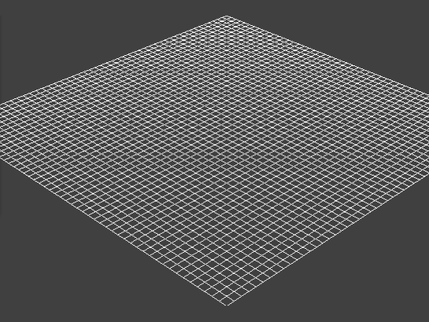 Without shearing |
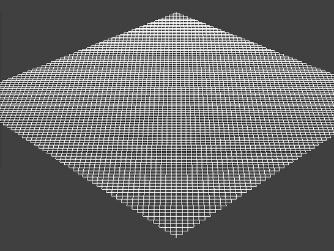 Only shearing |
All constraints |
3: Simulation via Numerical Integration
Each step zeroes pm.forces, adds F = m a gravity, and adds Hooke spring forces F_s = ks (|p_a-p_b|-rest) along each spring direction; bending springs use a smaller effective stiffness. Verlet updates x_t = x_t + (1-damping/100)(x_t - x_{t-dt}) + a_t dt² and Provot clamps any spring longer than 1.1× its rest length by moving the two endpoints together.
3.1: Experimentation with parameters
I swept ks, density, and damping on pinned2.json, capturing an early frame and the final rest state for each.
Spring stiffness (ks)
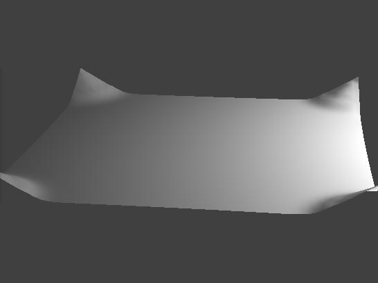 default early |
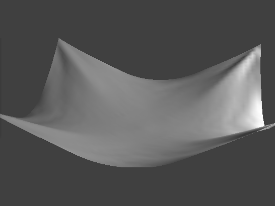 default rest |
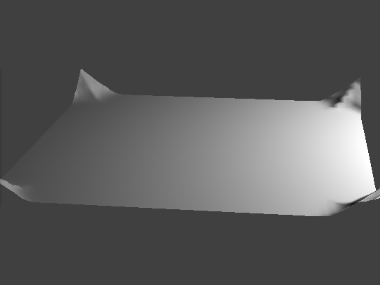 ks=500 early |
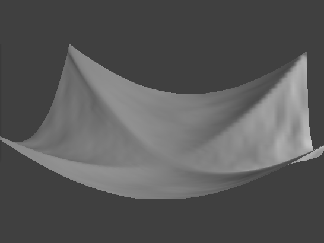 ks=500 rest |
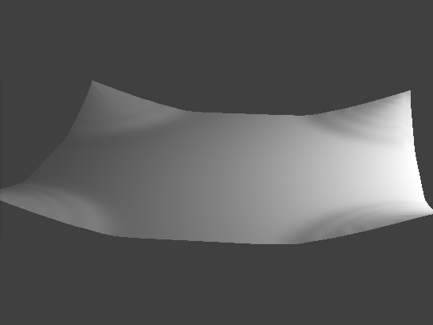 ks=50000 early |
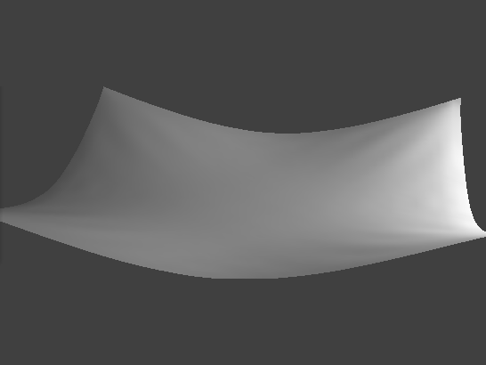 ks=50000 rest |
Density
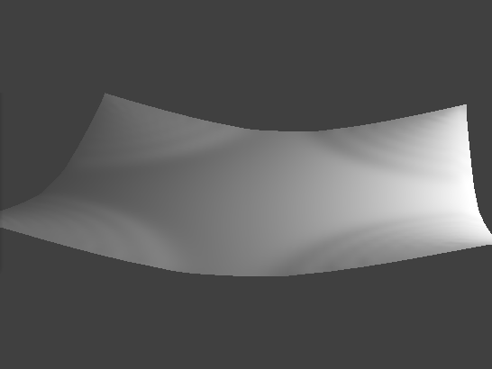 density 5 early |
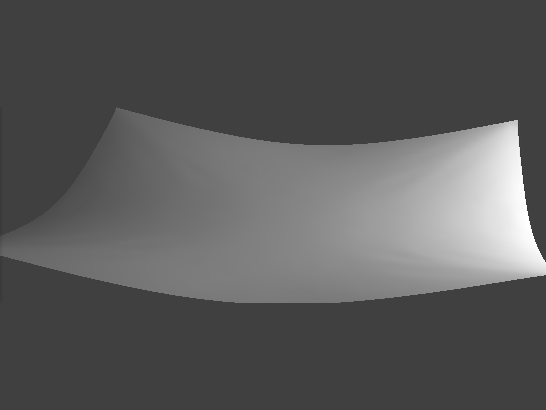 density 5 rest |
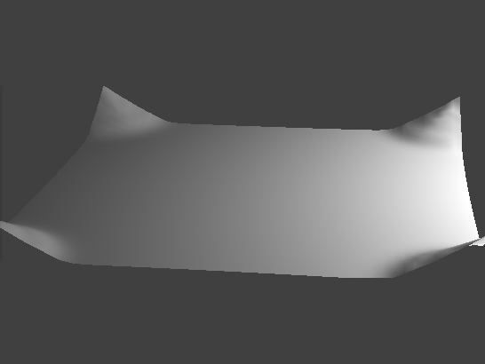 density 150 early |
density 150 rest |
Damping
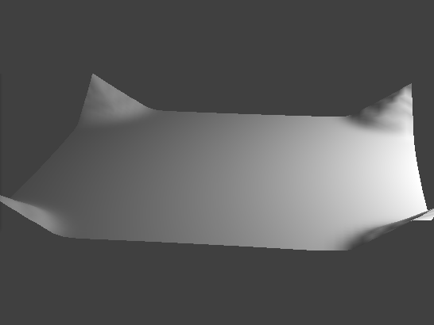 damping 0.02 early |
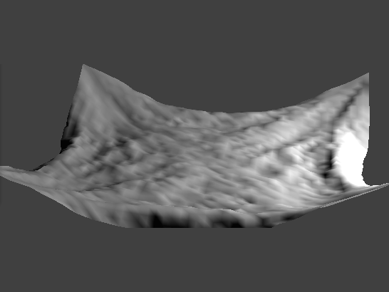 damping 0.02 rest |
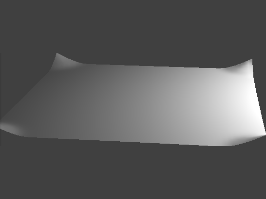 damping 0.8 early |
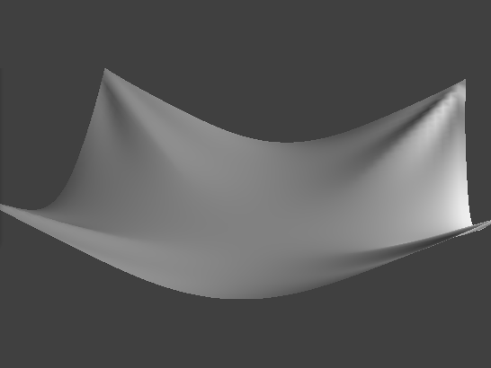 damping 0.8 rest |
With low ks the sheet is floppy and stretches before settling; with high ks it stays stiff but can oscillate. Higher density increases inertia and slows the fall. Higher damping removes energy quickly and kills the bounce, while very low damping lets the sheet keep swinging.
3.2: Image of shaded scene/pinned4.json
The image shows scene/pinned4.json at rest with the Diffuse shader. All four corners are pinned, so the sheet settles into a shallow sag.
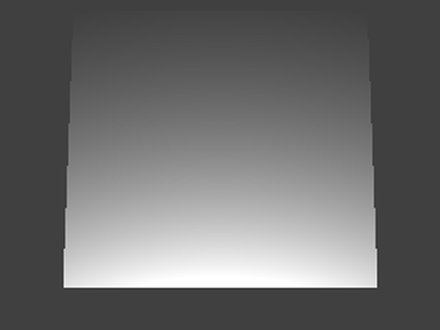
4: Handling Collisions with Other Objects
4.1: Implementation
For the sphere, Sphere::collide checks whether a mass is closer to the center than the radius. If so, it finds the tangent point where the segment from the mass to the sphere center meets the surface and builds a correction from the previous position to that tangent. The mass is placed at last_position + (1-friction) * correction, so higher friction reduces sliding.
For the plane, Plane::collide computes signed distances of the previous and current positions. If the mass crossed the plane, it projects the current position onto the plane, offsets it by SURFACE_OFFSET on the original side, and scales the correction by (1-friction). Collisions run after self-collision and before the Provot constraint.
4.2: Image of shaded cloth from scene/sphere.json
The cloth drapes over the sphere and folds where it falls past the equator. Lower ks lets the cloth sag and slide further; higher ks keeps the sheet taut around the sphere.
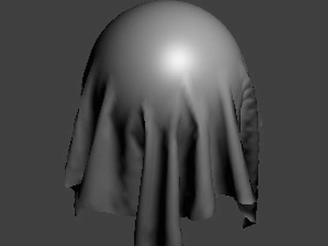 ks=500 |
ks=5000 (default) |
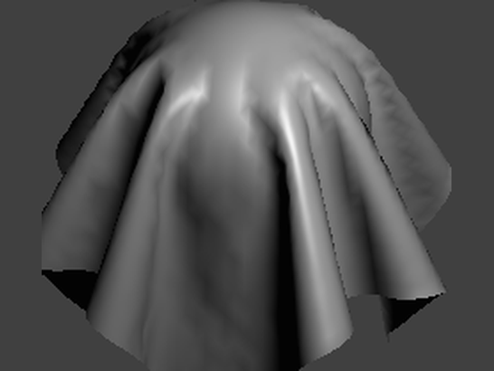 ks=50000 |
4.3: Image of cloth lying peacefully
With scene/plane.json the cloth falls onto the plane and comes to rest. The friction of 0.5 lets it settle rather than slide indefinitely.
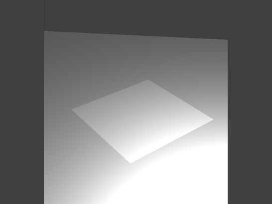
5: Handling Self-Collisions
5.1: Implementation
I implemented hash_position with box dimensions w = 3*width/num_width_points, h = 3*height/num_height_points, and t = max(w,h). The position is truncated to a box index on each axis and the three indices are combined into a single float key. build_spatial_map clears the map and buckets each mass by its key. self_collide looks up the same bucket and, for every other mass closer than 2*thickness, computes a correction that places the pair exactly 2*thickness apart. Corrections are averaged and scaled by 1/simulation_steps so a single step does not over-correct.
5.2: 3 images that show the cloth falling and folding on itself
The sequence shows the vertical sheet falling, the first fold appearing, and the final pile after self-collision has kept layers from intersecting.
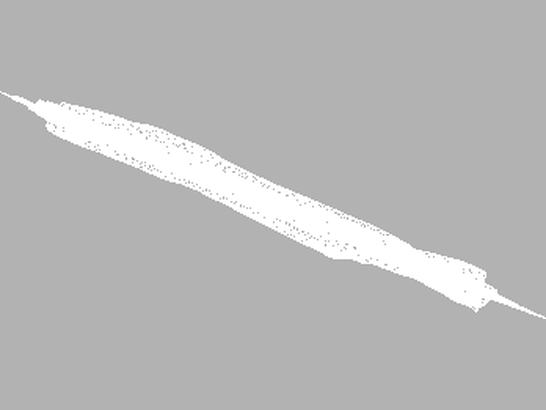 Early fall |
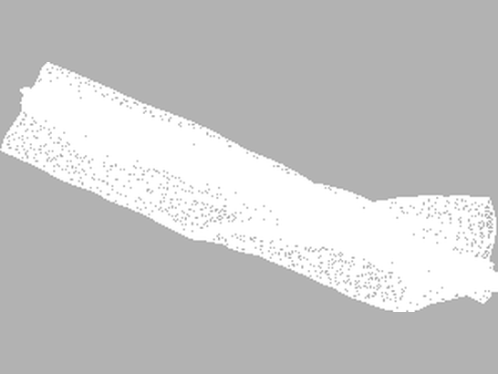 First fold |
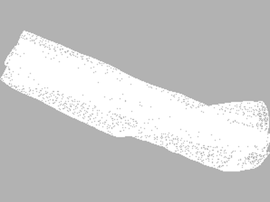 Rest |
5.3: Vary density and ks
I compared ks = 500 vs 50000 and density = 15 vs 300 on the same scene, recording a mid-fall frame and the rest state.
ks variation
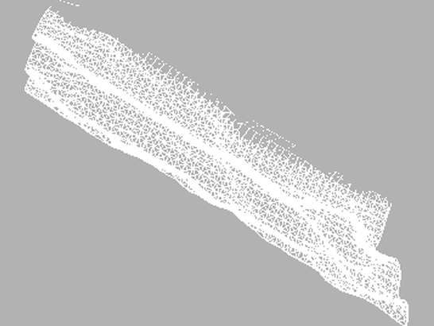 ks=500 mid |
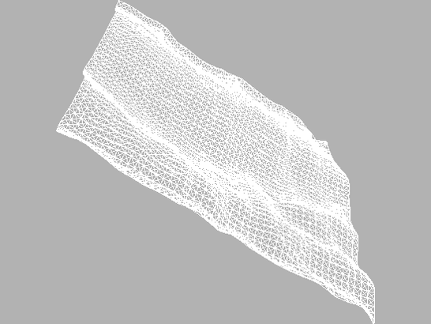 ks=500 rest |
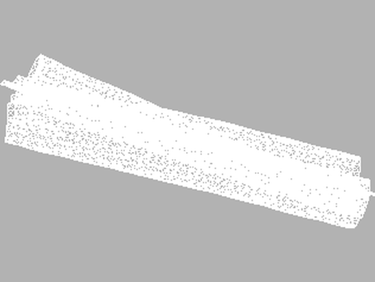 ks=50000 mid |
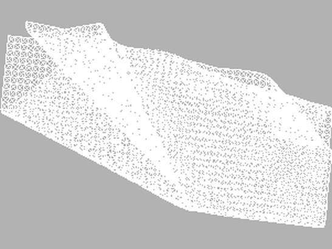 ks=50000 rest |
density variation
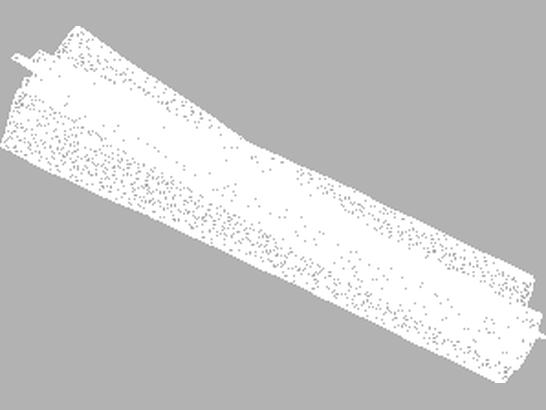 density 15 mid |
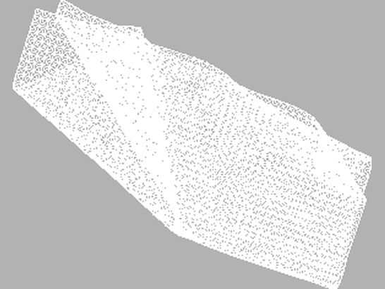 density 15 rest |
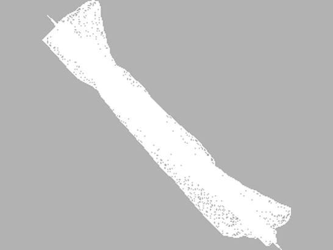 density 300 mid |
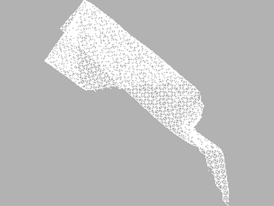 density 300 rest |
Higher ks keeps the sheet stiffer so it folds in broader panels; lower ks lets it crumple into more, smaller folds. Higher density gives each mass more inertia, so the sheet falls and folds more slowly and settles with thicker layers.
6: Shaders
6.1: Describe shader programs, vertex/fragment shaders
- Diffuse.frag computes Lambertian shading
kd * (I/r²) * max(0, n·l), withnthe interpolated normal andlthe direction to the light. - Phong.frag adds ambient, diffuse, and Blinn-Phong specular. The half-vector is
h = normalize(l + v), and the specular term isks * (I/r²) * max(0, n·h)^p. - Texture.frag samples
texture(u_texture_1, v_uv)per fragment using the UVs generated for the cloth mesh. - Bump.frag samples a height map, computes finite differences
dUanddV, forms the perturbed normal(-dU, -dV, 1)in tangent space, and transforms it with the TBN frame before shading. The geometry stays flat, but the lighting reacts to the height detail. - Displacement.vert moves each vertex along its normal by
h(u,v) * k_hbefore the model/view/projection transforms; Displacement.frag then shades the displaced geometry like Bump. This one changes the silhouette because the vertex positions change. - Mirror.frag uses
w_o = normalize(v_position - u_cam_pos)andw_i = reflect(w_o, normalize(v_normal))to sample the cubemap.
The vertex shader supplies position, normal, and UV to the fragment shader through varyings; the fragment shader does the per-pixel lighting or texture lookup. Only the Displacement shader modifies the vertex position, so only it can change the mesh silhouette.
6.2: Explain Blinn-Phong + Screenshots
Blinn-Phong splits the light into ambient, diffuse, and specular parts. Ambient approximates indirect light with ka * ia. Diffuse uses the Lambert term kd * (I/r²) * max(0, n·l). Specular uses the half-vector between the light and view directions, so highlights appear where the surface would reflect the light toward the camera. I used ka=0.3, ks=2.0, ia=1.0, and p=8, and rendered the components on the sphere scene.
Ambient only |
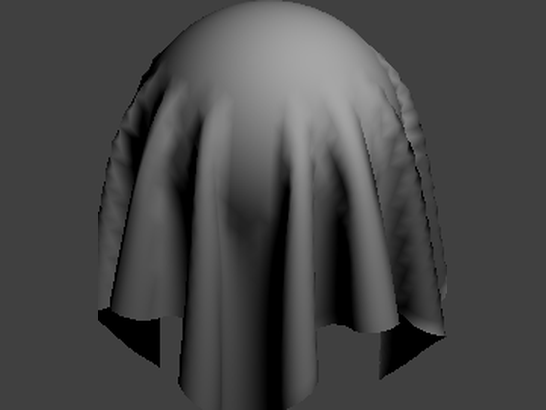 Diffuse only |
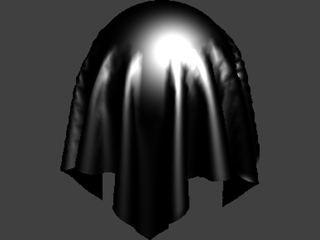 Specular only |
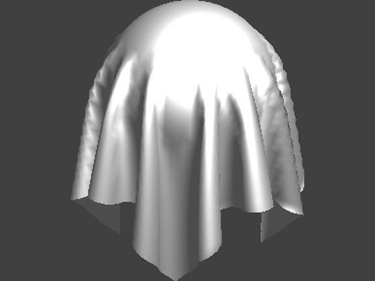 Full Blinn-Phong |
6.3: Image of custom texture
I temporarily used texture_4.png as the color texture for the Texture shader so the mapping is easy to see. The UV grid of the cloth shows the texture stretched over the folds.
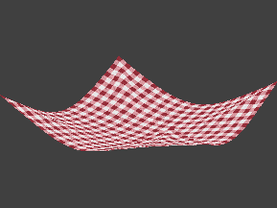
6.4: Image of bump mapping, displacement mapping
I used the brick height map from texture_3.png for both shaders. Bump keeps the geometry flat and perturbs the normal, so the silhouette stays smooth. Displacement moves the vertices, so coarse tessellation (-o 16 -a 16) shows blocky geometry and fine tessellation (-o 128 -a 128) resolves the height detail.
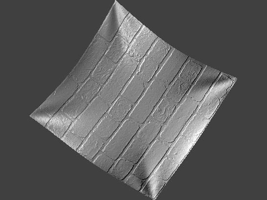 Bump cloth coarse |
 Bump cloth fine |
 Bump sphere coarse |
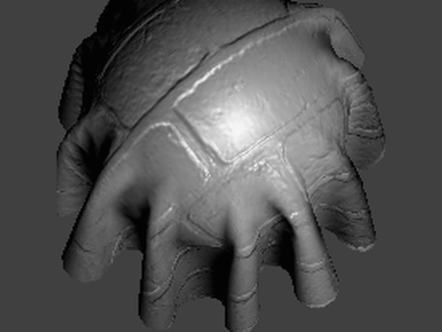 Bump sphere fine |
Displacement sphere coarse |
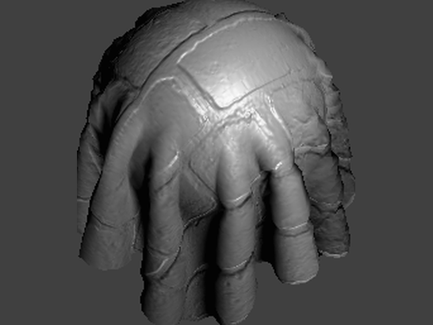 Displacement sphere fine |
6.5: Image of mirror shader
The mirror shader reflects the cubemap across the surface normal. On the cloth the reflection stretches with the folds; on the sphere it shows the environment bent around the dome.
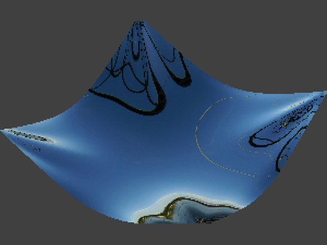 Mirror on cloth |
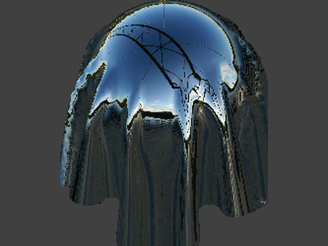 Mirror on sphere |
6.6: [Extra Credit] Custom shader
Not attempted.
7: [Extra Credit] Additional Cloth Simulation Features
Not attempted.
8: Acknowledgement of AI
I used an AI coding assistant (opencode) for assistance with debugging and scripting. The assistant helped identify the synthetic key-event timing coalescing issue and the specular visibility issue with the pinned cloth, both of which are discussed in the Problems and fixes section. I reviewed all code, shader modifications, and images myself.